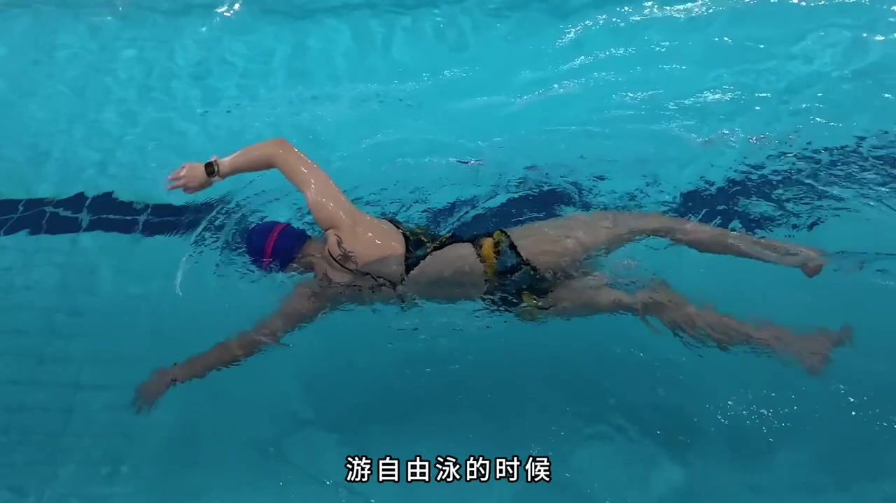
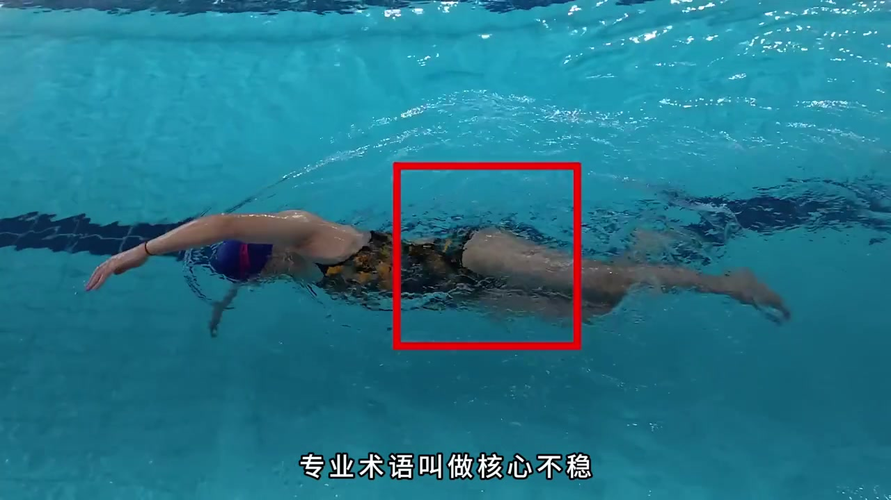
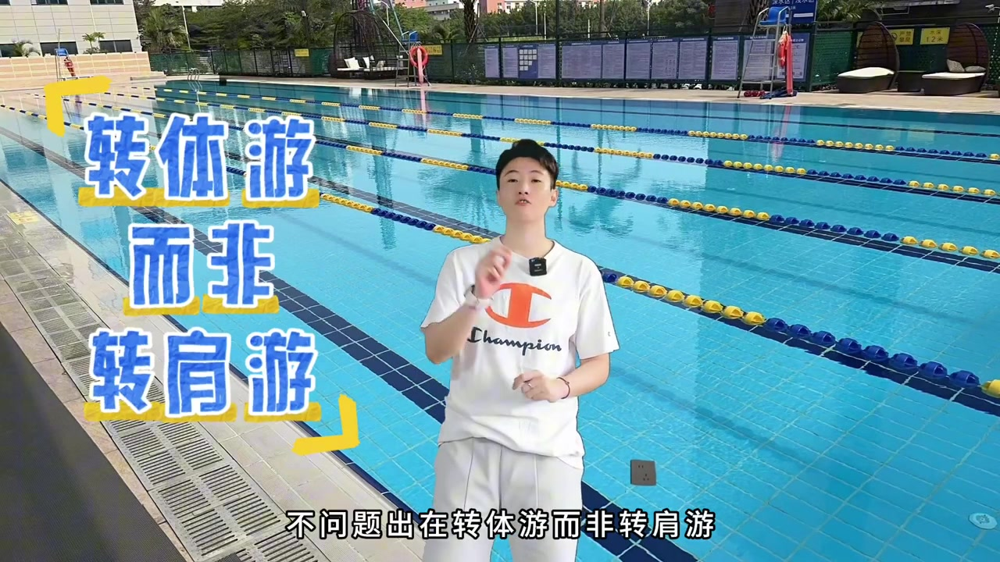
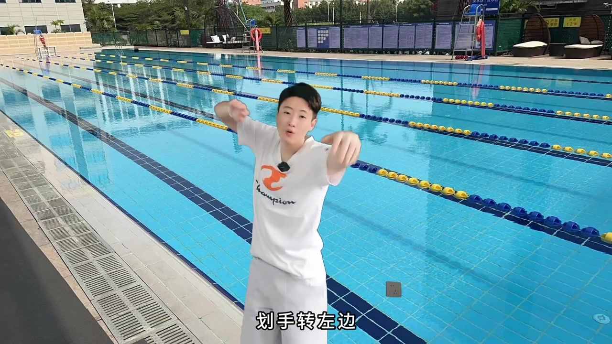
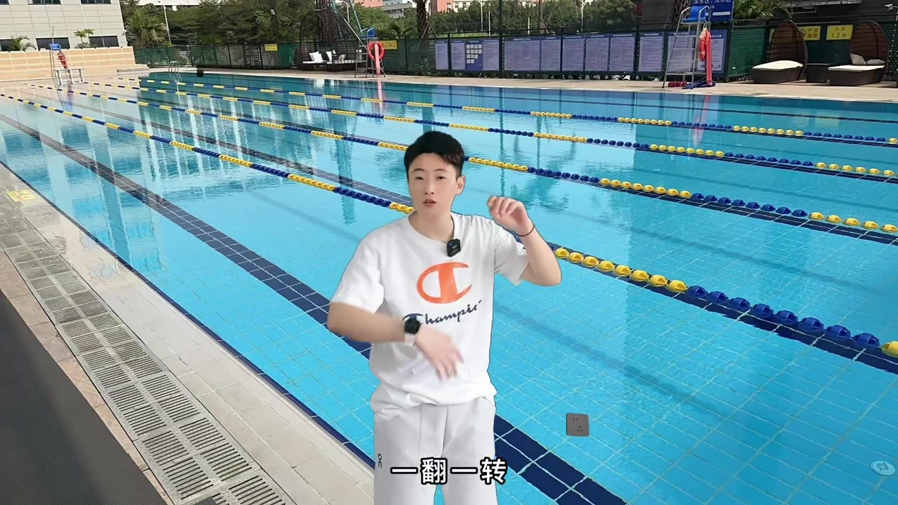
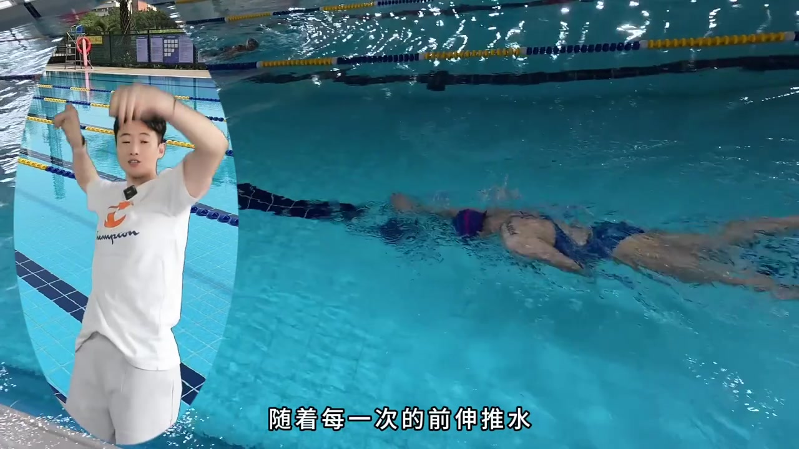
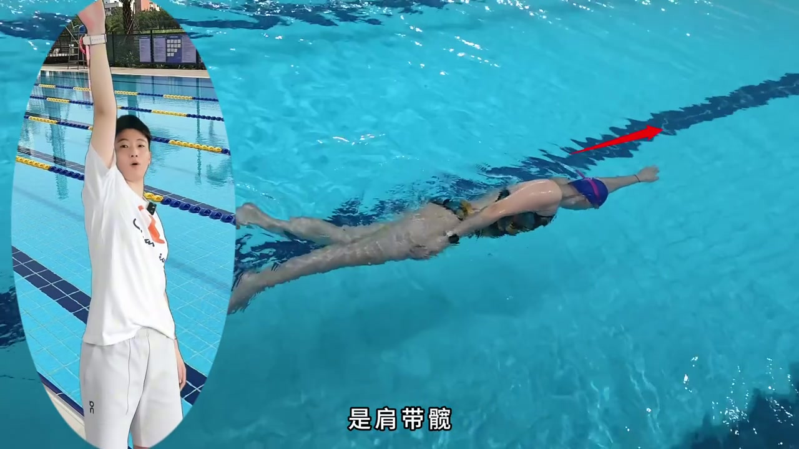
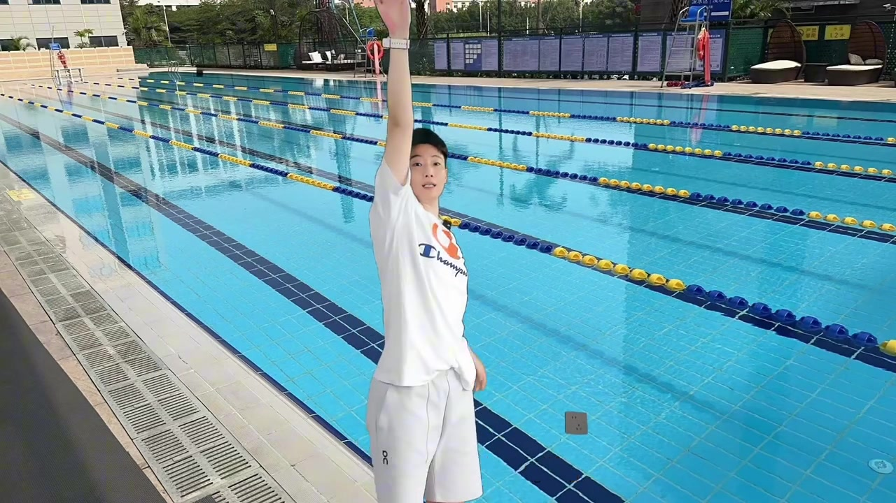

水里荡秋千的核心
画面先从俯拍自由泳切入：游自由泳时，核心像在水里荡秋千——左摇右摆、扭来扭去。红框框住腰髋区，字幕打出「专业术语叫做核心不稳」，游起来像扭扭蛇。
「很多人啊，游自由泳的时候，核心的部分就像在水里荡秋千……专业术语叫做核心不稳，游起来就像扭扭蛇。」
接着抛出常见归因：是核心力量差吗？讲者立刻否定——问题不在力量本身。
说明：Whisper 保留原识别；叙述结合画面字幕校正（「自用」→自由泳、「有起来」→游起来、「转体由/转肩由」→转体游/转肩游、「宽带肩/肩带宽」→髋带肩/肩带髋、「滑手」→划手、「宽」→髋、「前身」→前伸、「前致手」→前置手、「连关」→连贯、「肩部的一天」→进步的一天、「永培邦先生」→泳培帮线上）。页面元数据作者昵称缺失，以话题标签「泳培帮」标注来源。


转体游而非转肩游
池边站定，大字叠出诊断：问题出在「转体游而非转肩游」「髋带肩而非肩带髋」。讲者比划划手——脑子里想的是「划手，转左边；划手，转右边」，身体就跟着左右翻面，核心永远不稳，继续荡秋千。
「不，问题出在转体游而非转肩游，髋带肩而非肩带髋……随着每一次的划手动作，身体就像左右的翻面……那么你的核心永远都不稳定。」


为什么核心稳不住
讲者解释机制：主观想转动身体、让身体左右翻面时，发力点落在核心——就像躺在床上翻身，肚子带着身体翻过来。发力点与动作点都在核心，水里一翻一转，髋就会塌、腰跟着扭。
「你用核心发力，用核心做动作，你还想维持它的稳定，这几乎是不可能的事。」

转肩带着身体转
进入正确解法：自由泳正确的转动不是翻身体转体，而是转肩带着身体转。每一次前伸推水，让肩膀转动滚动起来，身体跟随肩膀；主力军是肩膀的联动。
「而自由泳正确的转动并不是去翻身体转体，而是转肩带着身体转……主力军是肩膀的联动。」

趴平侧倾跟练
给出可跟练动作：水中先趴平，手臂一前一后；前置手向前伸，胳膊带着肩膀转，肩膀带着身体侧倾。多做几次就能感受到自由泳如何转动——是肩带髋，而不是髋先转带着肩去拧。
「此时你的核心是拉长收紧的，不塌不扭的；连贯起来自然核心也就不会出现荡秋千的情况了。」

重点复述与收尾
讲者抬臂复述重点：「转肩游而非转体游」「肩带髋，而不是髋带肩」。收尾口播「OK，明天又是进步的一天」，并欢迎加入泳培帮线上训练营、落地练。
「再重复一下重点，转肩游而非转体游；肩带髋，而不是髋带肩。」
